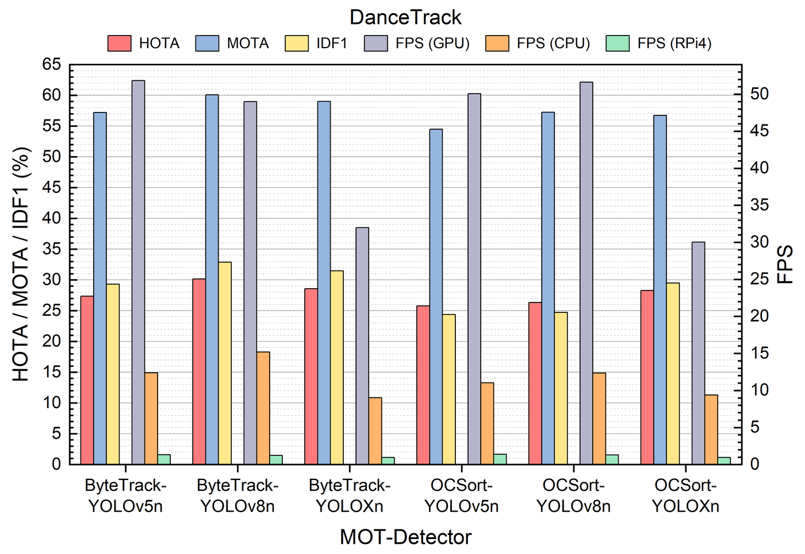
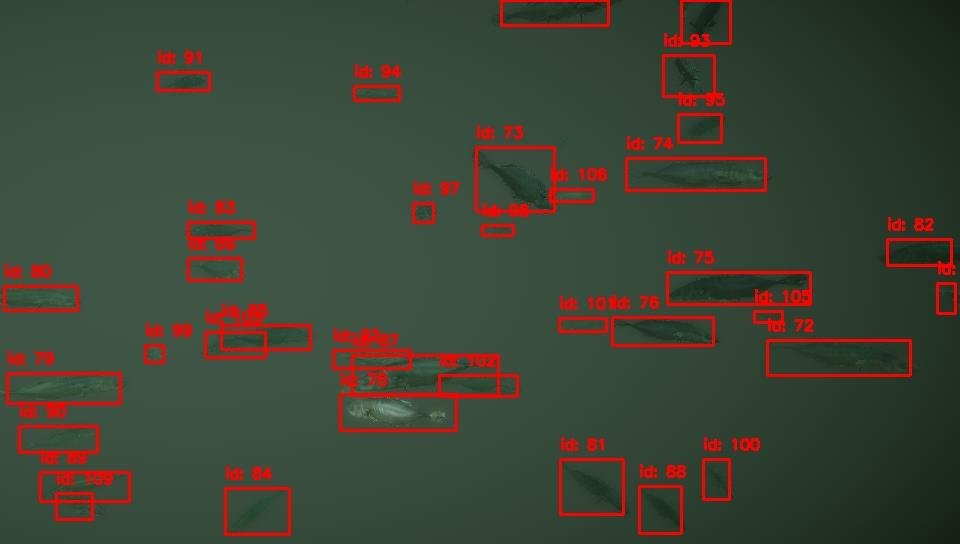

Which detector and tracker can run onboard a robotic fish? This study compares six pairings on DanceTrack and BrackishMOT, measuring accuracy and speed on a GPU, a laptop CPU and a Raspberry Pi 4.
Technical summary
Narrated summary · 4:53. Captions are included in the video.
Comparing trackers across three devices
Swarm behaviours require each agent to detect and track its neighbours on embedded hardware. Three nano detectors (YOLOv5n, YOLOv8n, YOLOXn) are paired with two trackers (ByteTrack, OC-SORT) and evaluated for accuracy and speed on a GPU, a laptop CPU and a Raspberry Pi 4.
YOLOv5n yields the fastest pipelines on the Pi. YOLOv8n is the most accurate on DanceTrack and YOLOXn on BrackishMOT.

Underwater tracking
Tracking on BrackishMOT

ByteTrack output on a BrackishMOTSynth frame with many small, visually similar fish.
Homogeneous appearance makes identity association the main difficulty, which motivates its use as an underwater benchmark.
ICAR 2023 posterQuestions & answers
- Did the same detector lead on both datasets?
- YOLOv8n had the highest accuracy on DanceTrack, while YOLOXn led on BrackishMOT. The choice of benchmark affected which detector ranked first.
- Which pairing was fastest on the Raspberry Pi 4?
- On BrackishMOT, YOLOv5n paired with ByteTrack reached 1.45 frames per second. The paper reports speed separately for the Raspberry Pi, laptop CPU and GPU.
Cite this paper
@inproceedings{eltobgui2024trackers,
title = {Towards Efficient Underwater Robotic Swarms: Edge-Based Comparative Analysis of Multi-Object Trackers},
author = {ElTobgui, Rim and Zayer, Fakhreddine and Iacoponi, Saverio and De Masi, Giulia and Renda, Federico and Dias, Jorge},
booktitle = {OCEANS 2024 - Singapore},
year = {2024},
doi = {10.1109/OCEANS51537.2024.10682269}
}